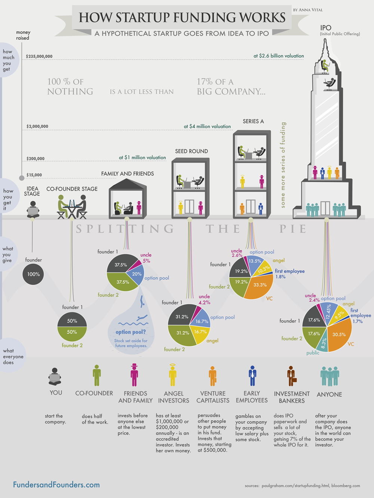

my analysis: 5 Success Factors for Startups
People say that startups create great fortune and make the world a better place. There are a lot of good ideas and plenty of them become massive successes. For instance, Facebook, Instagram, and Snapchat all grew as startup companies and now are all valued at billions of dollars. There are five critical factors that contribute to a successful startup company which include a remarkable idea, an outstanding leader, a strong team, proper funding and good timing. This article first illustrates the problem, and next introduces how remarkable ideas, outstanding entrepreneurs and strong teams dictate startup success. Proper funding is also an important element; however, acquiring seed round investors incurs some disadvantages. Finally, this article explains why good timing is the most important factor of all.
It seems that startups are promising and exciting; however, they’re actually full of competition, risks, and uncertainties. Cofounder and co-CEO of Warby Parker Neil Blumenthal says, “A startup is a company working to solve a problem where the solution is not obvious and success is not guaranteed.” (Robehmed, 2013). Sponsored by Babson College and Baruch College, the Global Entrepreneurship Monitor (GEM) reports that “27 million working age population - approximately 14 percent - are launching or running new businesses” (Buchanan, 2015). In addition, statistics from Bloomberg reveal that 8 out of 10 startups can no longer survive after 18 months (Wagner, 2013). Though the market has a lot of competitors and the failure rate of startups is extremely high, there are still five key ingredients to any successful startup’s system.
Each successful startup starts with a great idea. Great ideas are unique and new to the market, and they can form into a compelling new product or service which is able to attract a lot of potential customers. Ideas are so important because they are the keys to market demands. According to CB insights, market need was listed as the number one reason for a startups’ failure in a prominent 42% of cases. Figure 1 clearly shows that market need is the most critical determinant of a startup’s destiny. Without an attractive market, the idea itself is not a good idea. But how to determine whether a business idea is a good one? It seems still an unpredictable mystery, but not impossible to answer. Heijden (2001), a business professor at Strathelyde University concludes that good business ideas should not have the following discoverable flaws: Over-estimation of growth in demand, severe over-estimation of network effects, ignoring the low barriers to entry, and the lack of protection for the business in the future (p.18). Those are the terms that entrepreneurs should try to avoid when evaluating their business ideas.
In this fast-changing world with exponentially-accelerated technologies, innovations in the tech arena especially dominate the market. So startup ideas involved with high level technology usually have better chances to stand out. For 2017, there are 5 top startup trends which have potentials to change the way people live, work or play, and even how businesses or government is organized. The top of the startup trends’ list is the startup idea that related to artificial intelligence. Compare to 2016, investment in artificial intelligence in 2017 will increase more than 300% because it can apply cognitive interfaces to sophisticated systems, accelerated analytics, and machine learning (Press, 2016). Clearly, investors will be attracted to the startup business ideas made use of artificial intelligence. The second trend is Chatbots. Chatbots are software that are able to interact with natural language input and intimate as a real person to hold a chat. Business organization like to invest in startups of chatbots because they can economize on costs in customer service and can serve many clients at once (Reshmi & Balakrishnan, 2016, p.1). The third trend is startup ideas involve cybersecurity, which can protect the computer system if a computer’s hardware, software or the information on them were stolen or damaged. Since this technology is still evolving, the startups in cybersecurity which can provide the latest protection innovations are the best (Nataliya, 2017). The fourth trend is startups in virtual reality technology, which can generate an imaginary setting or a real environment based on the realistic frames, sounds and other sensations. Under the effects of Pokémon Go and google glass, virtual reality technology has great market potential. And then finally, the fifth trend in intelligent startups ideas is wearable devices such as google glasses and apple watches.
Another determinant of a successful startup is that it must have a prominent founder. There is no certain criteria to become an entrepreneur, and as a result, anyone can start a business. It is not difficult to see people who have great startup ideas, however, they are not sure whether they should be entrepreneurs and how they can move their ideas forward. Entrepreneurs create startups and are always the soul of them. They need to discover opportunities based on their life experiences, recognize the opportunities based on their previous knowledge, and exploit the opportunities based on their education level (Lee & Lee). In order to accomplish these missions, people define a majority of entrepreneurs with the following characteristics. According to Resnick, a serial entrepreneur who now serves as CEO of Sourcify, 5 key traits that every entrepreneur should have are passion, perseverance, resourcefulness, open-mindedness and spongelike nature (2014). Firstly, “passion” represents a very strong belief in something. The source that dominate entrepreneurs’ passion can be money, dream or simply by their heart. Tjan and his co-authors venture capitalists Richard Harrington and leadership advisor Tsun-Yan Hsieh said that most entrepreneurs are fueled “by an unshakable sense of purpose”, and they also found that 65% of founders have been driven by “heart.” (Casserly, 2012). Secondly, “perseverance” is the quality of not giving up under a lot of pressure. No matter how difficult the work would be, entrepreneurs still continue to accomplish their goals. Thirdly, “resourcefulness” means the ability to to overcome difficulties quickly and cleverly. There will always be new problems and challenges come up, a startup founder should be smart enough to overcome these difficulties. Fourthly, “open-minded” means the willingness to accept new ideas. Entrepreneurs should not only follow their own thoughts, but also listen to the investors or coworkers’ reasonable and contributive suggestions. Fifthly, “spongelike nature” means being able to absorb liquids and yield it back when compressed. Creating startup is a learning process. Like sponges, entrepreneurs should keep soaking in everything and learning anything they can. The above characteristics are required constantly for the entrepreneurs since they need to deal with new problems and challenges all the time. In reality, the number of people who always hold all these five characteristics is relatively small compare to the number of entrepreneurs, which may account for startups’ high failure rate.
Moreover, the right core team is extremely important for a startup because business is nothing without people who execute the entrepreneurs’ ideas. Though the entrepreneur may have big dream, it is eventually the core team who work behind the scenes, which help the startup to realize its goals. According to Saurabh Singla, a CEO and co-founder of Lazylad, there are five reasons he gave why the core team is crucial for startups (2016). First, it is the team that executes business plans and determine the startups’ fates. The milestones the startups achieve depend on the teamwork as well as each team member’s knowledge, skills, competence, attitude and aptitude. Also, startups with strong executive team can save entrepreneurs’ time and energy, and the entrepreneur can spend more time on exploring the right direction and seeking a bigger goal. Second, the culture of any startup is defined by the core team’s personalities, values and beliefs. Entrepreneurs should make sure the core team members culturally fit traits of the startup figure. Third, the right composition of team members will complement each others’ skills and abilities. For start-ups, each person plays a big role in the company (Robbins, 2010). There are usually less than 20 people in the early stage, so it is important to have diversity in talents and maintenance in good balance for a core startup team. For example, if the entrepreneur specialized in technology, then he might want to find someone who knows business for his core team. Fourth, venture capitalists will only fund startups with a high-quality core team. They value people more than idea, and they want to invest in startups with adequate members or excellent entrepreneurs (Cusumano, 2013). Funding is another significant determinant for a startup’s success, which will be addressed below. Fifth, both entrepreneurs and the core team need to courage each other, to support each other. There are too many uncertainties and challenges for a startup company, so all team members need to constantly work and support with each other. A great team must be highly cohesive. All of these reasons show the importance of a good core team.
Most startup teams consist of six major roles, and each person should know what they are responsible for. Firstly, a leader or a product manager is someone who leads the team and make sure the project is taken care of in all aspects. Secondly, a developer (s) is someone who can make the product by their coding techniques. Thirdly, a designer is someone who can design the appearance of the product for the company. Fourthly, a legal advisor is someone who can protect startup company and acknowledge the market risks. Fifthly, a marketer/businessman is someone who can make business models, reach out to investors, and understand the distribution channels. Sixthly, an accountant is someone who can manage the books and taxes. Other than these six techniques a startup need, there are three essential qualities that all startup team have which are talent, passion and dedication. In order to find the right team, there are three general methods for the entrepreneurs. They can use their personal network, which is to ask their friends and colleagues around or publish some posts to their online social networks. Additionally, entrepreneurs can post job descriptions about the people they are looking for on multiple boards. Moreover, entrepreneurs can go to various events to meet more people who would be interested in their startups (Strauss, 2010).
Funding is another significant factor for a startup’s success. According to figure 1 “Top 20 Reasons Startups Fail”, 29% startups failed because they do not have enough funding. Though entrepreneurs have remarkable ideas as well as good sources to implement them, a business without money can be very difficult to continue. Money is required in many aspects such as the startup core team expenses, the advertisements, and some legal supports. From Angel investors to venture capitalists, entrepreneurs might be confused about so many different types of funding available for startups. In the early stage, most entrepreneurs would not have chances to access to venture capital or angel investors level funding (Zwilling, 2015). Their best sources are the contributions from family and friends. Survey from the Global Entrepreneurship Monitor (GEM) reveals that in 2006, there were $600 billion out of $208 million informal investors funding millions of companies in 42 countries (As cited in Lee & Persson, 2012). This data shows that raising money from family and friends is common and doable. In the meantime, most entrepreneurs have already found their co-founders and they would need to register (not required but it makes the following steps easier) a startup company together. The money entrepreneurs get from friends and family is limited, and as a result, it is essential to start building a proper prototype or Minimum Viable Product and finding seed investors as quickly as possible (Digital Risks). During the seed round, angel investors and venture capitalists are usually what startups looking for. Most angel investors are rich people who want the startups they fund initially to attract larger financial investments from venture capitalists (Cumming & Zhang, 2016, p.4). Compare to Angel investors, venture capitalists provide business expertise and professional assistance for a business venture to expand. They both seek a high rate of return of a promising startup, though there is a high risk of failure, they still have a high potential for growth. The typical business they seek for are startup ideas as listed in the fourth paragraph above such as artificial intelligence, Chatbots, cybersecurity and virtual reality technology.

Because there are substantial initial expenses to cover for a startup business, it may seem that finding seed funding is the most crucial thing to do. According to Patel, who is an entrepreneur, marketer and co-founder of ContentMarketer.io, there are a lot of essential expenses that entrepreneurs need to pay for such as making business plans, doing market researches, hiring legal services, tax professionals, technical supports, and accountants (2015). It is true that money plays a crucial factor, however, there are trade-offs that can mitigate the overall benefits of seed round funding. For instance, because angel investors choose to tolerate high risks, entrepreneurs are often required to return a 10 times the original investments within the first 5-7 years (Newland, 2015). As a result, entrepreneurs are usually subjected to lot of pressure, which might affect their abilities to focus on the larger picture. In addition, if entrepreneurs ask strategic investors for financial help, strategic investors might want to take active parts in making decisions and potentially make an acquisition of the company. As a result, there will be some limitations for the startup company’s future strategic chances (Startup advice: Should I take money from a strategic investor? 2014). Seed fundraising is tricky. If entrepreneurs want full control of their startup companies, they might need to find investors who are not very familiar with their businesses. Tony Hsieh, CEO of Zappos said, “Chase the vision, not the money; the money will end up following you.” Money is not that crucial compared to a wide vision. For entrepreneurs who are well-prepared, investors will appear to be delighted to support their startups.
Even though a great idea, an excellent entrepreneur, an effective team, and suitable funding contribute to a successful startup, the factor that matters the most is timing. Unlike other factors, timing depends on luck and cannot be completely controlled by people. Bill Gross, a serial entrepreneur who has started over 100 companies, examined the reasons accounting for the success of a startup company. Gross found that funding accounted for 14% success ratios, the business model for 24%, the ideas for 28%, and the team for 32%, and most surprisingly, timing accounted for 42%. Apparently, the percentages show that timing is the factor that stands out from the others. It seems that timing is a mystery, but there are actually some factors controlling timing such as the customer perception, technological development, and economic conditions. Entrepreneurs should know that as time changes, those factors change as well. For instance, in 2004, under the effects of Friendster, the Facebook launched successfully because there was a clear market demand. If there was no Facebook, some other similar companies would have come up to meet that demand in the market, and people would talk about that company instead (Watts, 2015). If the startup idea comes too early and consumers are not prepared to accept it, there will not be enough market demand. On the other hand, if the idea comes too late, there will already be a lot of different competitors in the market. Facebook succeeded because it was the perfect timing. In addition, the success of YouTube was partly because of the release of Adobe Flash as well as the increase of the internet speed. After Adobe Flash was developed and the internet speed was improved, users could easily browse digital content online, and that was when YouTube was created. Similarly, Uber’s success relied on the fast spread of mobile devices as well as the increasing adoption of online payment. Other than customer acceptance and technological improvements, the economy is also a determinant for timing. During the economic recession, people were short of money. Airbnb provided a platform for rent lodging, which allowed households to rent private space to strangers and to earn extra money (Hashemi, 2015). Now, Airbnb has more than 150 million guests and has become a big success. Alongside other factors, the perfectly timed moment is the strongest one above all. However, it is difficult to determine whether it is the right timing for the startup idea. In order to find the right timing, entrepreneurs should do as much market research as they can to find their target demographics’ personas. In addition, they can research to see their potential competition to bring their product to market first.
Startups make the world full of surprises and changes. Though startup is a journey into the unknown which consists of ambiguity, uncertainty and multiple challenges, and unfortunately, on average, 8 out of 10 startups will go out of business after 18 months. The ones that have the most potential have a remarkable idea, an outstanding leader, a strong team, proper funding and good timing. Some factors can be fully controlled by humans, but some, such as good timing, depend on a little luck. To make startups successful, entrepreneurs should learn as much as they can about their startup industry, and not be afraid of failure.